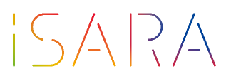

プログラミングで
人生の安定を手にいれよう

バンコクのノマドエンジニア育成講座
iSara[イサラ]
まずは２０日間で、
月１０万円稼げるスキルを手にいれよう。
※受講料金は実質０円です。詳しくは資料請求をどうぞ。
- 第６期生：2019年11月25日 ~ 2019年12月14日＊締め切りました
- 第７期生：2020年2月17日 ~ 2020年3月7日＊締め切りました
- 第8期生：2021年内に開催予定＊資料請求受付中です
エンジニアとして本当の自由を手に入れるためには？
エンジニア需要の高まりに伴い、プログラミングスクールが増えています。
しかしそこでの学習の先は、 提携して決められた就職先に就職すること。
これで本当にいいのですか？
日本人エンジニアはアメリカと較べて給料が格段に低い。
その理由がここにあり、 エンジニアは自分の給料をコントロールすべきなのです。
スキルを身につけたエンジニアは、人生をコントロールすることでより自由に。
そこで必要なのが「稼ぐ力」です。
ノマドエンジニア育成講座
iSara[イサラ]とは
「 稼ぐこと 」にフォーカスしたWebエンジニア育成講座です。
稼げるエンジニアに必要な５つのスキルとは？
-

基礎的な
プログラミングスキル -

案件獲得に必要な
営業力 -

見積もり作成から
納品までの知識 -

自分の付加価値を
高めるスキル -

フリーランス同士の
横のつながり
iSaraで「基本的なプログラミングスキル」は教えません
基礎的なプログラミングスキルは無料で学べる時代。
iSaraでは、基礎知識学習は事前課題とチャットサポートのみ。
-
STEP.1
【バンコク渡航前１ヶ月】
事前課題で基礎知識を学ぶ
-
STEP.2
【バンコク到着後】
実践的に稼ぐことに特化した学習
-
STEP.3
【バンコク帰国後】
講座実施後の案件獲得サポート
フリーランスには プログラミングスキル以外が大切。
iSara[イサラ]で学べること
iSaraの学習では、エンジニアとして「稼ぐ」ために必要な能力を身につけます。
これらを教えるのがiSaraです。
他のプログラミングスクールとここが違う！
iSara[イサラ]の３つのメリット

現役フリーランスから学べる
他のプログラミングスクールとは違い、実際にフリーランスとして活動しているエンジニアが直接講師を勤めます。

実践を通じて学べる
フリーランスにとって最短の学習方法は「実践」。iSaraでは実案件を通して学びます。現役フリーランサーの案件サポートに加え、クラウドソーシングを活用。初心者の自分じゃ無理と思うかもですが、現役フリーランスがサポートしますので大丈夫。

授業料が実質０円
講座費用258,000円以上の金額が稼げるまで「永久サポート延長」があります。
さらに！帰国後もサポート付き
リモートワーカーのチームを作ることで受注率、受注単価が大幅に向上します。
iSaraは講座が終わって終了ではありません。
参加メンバーのチャットグループを作り、帰国後も継続的に案件参加できるようになります。
また、チームで働くことで継続的に稼ぎやすい仕組みづくりも構築しております。